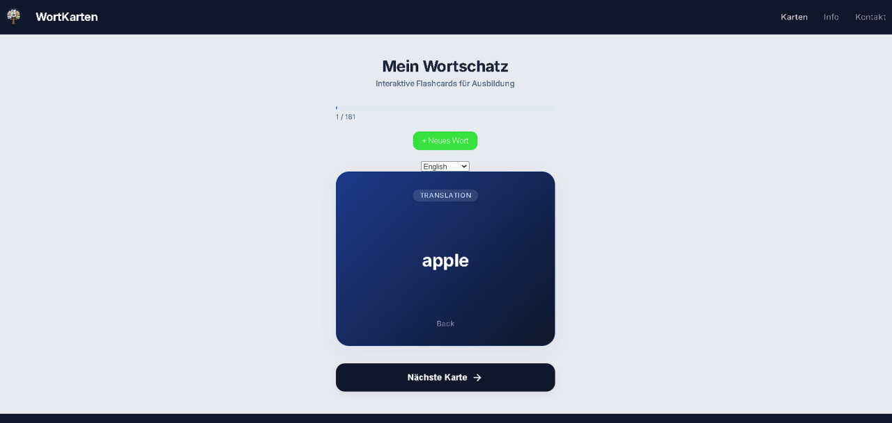
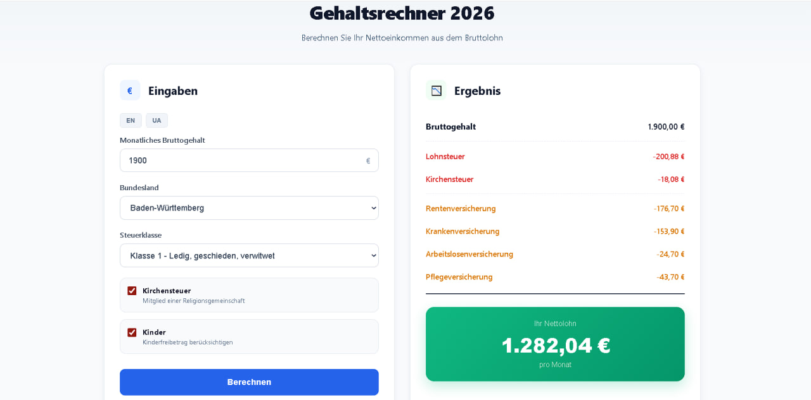
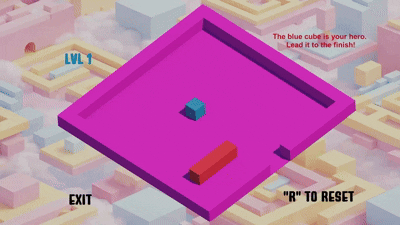

Standort
Rheinau, Deutschland
Als Absolvent des Wirtschaftsingenieurwesens habe ich meine Leidenschaft für Webtechnologien und Softwareentwicklung entdeckt. Ich suche aktuell einen Ausbildungsplatz zum Fachinformatiker (Anwendungsentwicklung), um mein analytisches Verständnis gezielt in der Webentwicklung einzusetzen und aktiv an modernen Webprojekten mitzuarbeiten.
Als Absolvent des Wirtschaftsingenieurwesens verfüge ich über eine starke analytische Denkweise und eine strukturierte Problemlösungskompetenz. Mein Weg in die IT ist von einer tiefen Leidenschaft für Webtechnologien und dem stetigen Willen zur Weiterentwicklung geprägt. Ich freue mich darauf, mein technisches Verständnis in eine Ausbildung einzubringen und aktiv an innovativen Softwareprojekten mitzuwirken.
Wirtschaftsingenieurwesen-Abschluss mit Schwerpunkt auf Prozessoptimierung und Datenanalyse.
Autodidaktischer Entwickler mit praktischer Erfahrung in modernen Webtechnologien.
Begeisterung für sauberen Code, nutzerorientiertes Design und kontinuierliche Weiterentwicklung.
Ausgewählte Projekte, die meine Fähigkeiten in der Webentwicklung widerspiegeln.

Eine interaktive Flashcard-App zur effizienten Sprachenlernunterstützung. Mit Funktionen für anpassbare Vokabelstapel, Fortschrittsanalyse und einer Lernlogik zur optimalen Merkhilfe.

Ein präziser Gehaltsrechner, speziell auf das deutsche Steuersystem ausgerichtet. Berechnet das Nettoeinkommen unter Berücksichtigung von Sozialversicherungsbeiträgen, Kirchensteuer und individuellen Steuerklassen.

Engine: Unity | C#
Ein Logik-Puzzlespiel, bei dem man einen Würfel durch knifflige Level zum Ausgang steuert. Entwickelt, um gridbasiertes Movement und Leveldesign zu üben.

Engine: Unity | C#
Ein actionreicher First-Person-Shooter, bei dem der Spieler gegen Zombie-Wellen kämpft. Fokus auf Waffen-Mechaniken, KI-Gegnerverhalten und State Management.

Engine: Unity | C#
Ein entspannendes Atmosphären-Spiel, in dem man als Fotograf eine wunderschöne Waldlandschaft erkundet. Entwickelt für Experimente mit Environment Design, Lichteffekten und einer eigenen Fotomodus-Mechanik.
Brauchst du Inspiration für dein nächstes Unity-Projekt? Lass meinen KI-Assistenten ein einzigartiges Spielkonzept für dich generieren!
Meine technischen Kenntnisse & Tools
Ich bin aktuell auf der Suche nach einer Ausbildungsposition. Ich freue mich auf Ihre Nachricht!